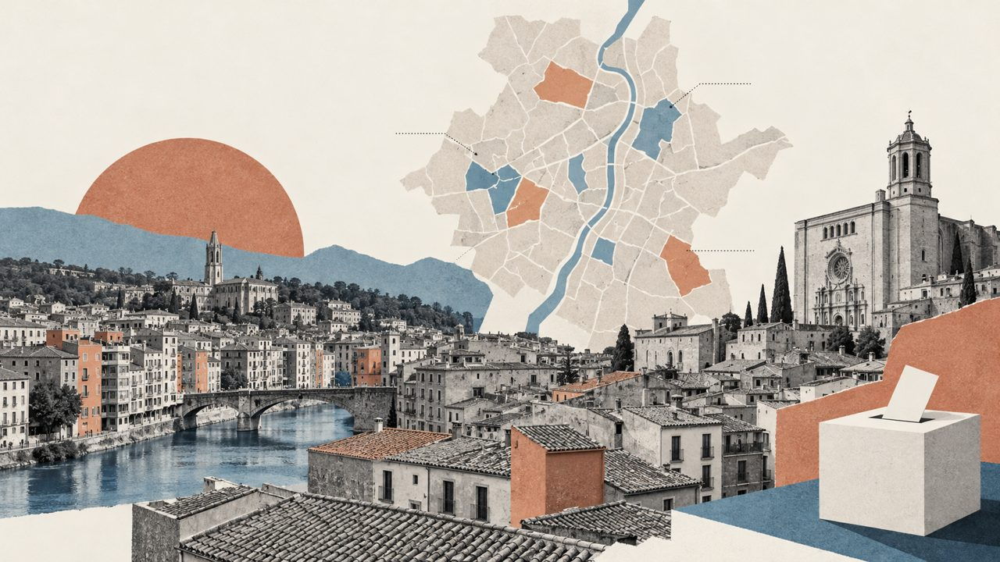

Actualitat · Dues Girones a les urnes · Girona
Girona, barri a barri: el 2019 Junts guanyava en 36 seccions i el PSC en 13; el 2023, el PSC en 43 i Junts en 19
A la Font de la Pólvora va votar el 33,4% dels electors; a Montjuïc, el 74,9%. Entre totes dues hi ha tres quilòmetres i 41,5 punts de participació.
Per Nacho G. del Álamo ·

Cada paràgraf porta una etiqueta: dada (xifra comprovable amb les fonts), patró (relació que es repeteix, sense afirmar-ne la causa), hipòtesi (explicació possible, sense dues fonts independents) o context (fets i declaracions publicats per altres, enllaçats). Com verifiquem (en castellà)
ContextA Girona hi ha un carrer que es diu de la Mimosa i un altre que es diu del Castanyer. Són noms d'arbres i de flors, posats a uns blocs dels anys setanta que l'administració va aixecar, diu una auditoria municipal, «amb característiques bàsiques per donar la cobertura social a les necessitats del barri» (Ajuntament de Girona, 2021). És la Font de la Pólvora. Pugeu per l'avinguda que porta el mateix nom i, si és dia d'eleccions, comptareu més portes tancades que obertes: el 23 de juliol del 2023, en aquella secció censal, va votar el 33,4% dels electors. Tres de cada deu. Els altres set es van quedar a casa, o no tenien casa on quedar-se, o tenien la llum tallada, que en aquell barri, segons els veïns, passa gairebé cada dia.
DadaA l'altra punta de la ciutat, a la secció de Montjuïc on hi ha els carrers de l'Avi Xaxu i de l'Onze de Setembre, el mateix dia va votar el 74,9%. És la secció amb més renda de Girona: 43.994 euros per unitat de consum, quatre vegades i mitja els 9.753 de la Font de la Pólvora. Entre les dues seccions hi ha uns tres quilòmetres en línia recta i 41,5 punts de participació. Girona, que en els mapes de tot Espanya apareix com una taca uniforme, és en realitat aquestes dues ciutats i les seixanta seccions que hi ha entremig.
ContextUna secció censal és un tros de barri d'entre 500 i 2.000 electors, la peça més petita amb resultats propis. Girona en té 62. Aquesta peça les mira una per una per entendre com arriba la ciutat a les eleccions generals del 29 de novembre. Totes les dades, elecció per elecció des del 1977, són a la pàgina dels resultats de Girona barri a barri (en castellà), i cada secció es pot buscar per l'adreça al mapa electoral carrer a carrer. L'abstenció de la ciutat i de tota la demarcació, amb els veïns que no tenen dret a vot, la vam explicar a Girona, la demarcació catalana on menys adults voten.
La ciutat que va canviar de color
DadaHi ha mapes que canvien a poc a poc, com la pell. El de Girona va canviar de cop. El novembre del 2019, Junts va ser el partit més votat en 36 de les 61 seccions que es poden comparar, ERC en 12 i el PSC en 13. Quatre anys després, el juliol del 2023, el PSC va guanyar en 43 seccions i Junts en 19. ERC no en va guanyar cap. Disset seccions van passar de Junts al PSC i dotze, d'ERC al PSC. Cap no va fer el camí contrari.
DadaEn vots, sense comptar el vot exterior, el PSC va passar del 16,0% al 29,3%; Junts, del 25,8% al 19,1%, i ERC, del 21,3% a l'11,9%. Sumar va pujar del 9,1% que tenia Unides Podem a l'11,5%; el PP, del 5,6% al 10,8%, i Vox, del 5,2% al 6,3%. I, sobretot, va votar menys gent: la participació va baixar del 72,8% al 62,5%. Deu punts que no es veuen al mapa, perquè un mapa de guanyadors pinta les seccions però no compta les cadires buides.
Veure la taula
ContextQue Girona voti diferent de la resta de Catalunya no és nou. El politòleg Macià Serra, de la Universitat de Girona, recordava que el vot dual, el que votava CiU al Parlament i el PSC al Congrés, «va existir, però amb menys força que a la resta de Catalunya», i que el 1982 «Girona va ser l'única circumscripció de Catalunya, i una de les úniques de l'estat, on el PSC-PSOE no va guanyar» (revista del COLPIS). La ciutat que no s'havia deixat endur per la riuada socialista del 1982 se'n va deixar endur quaranta-un anys després, i en unes generals.
«Si afinéssim l'anàlisi a les seccions electorals (unitats geogràfiques al voltant de 1000 electors), podríem veure com en molts municipis es podrien identificar zones o barris que es comporten electoralment de manera ben diferent»
Macià Serra, politòleg (Universitat de Girona). Revista del COLPIS, núm. 101
Sis districtes, sis ciutats
DadaL'INE divideix Girona en sis districtes censals que no coincideixen amb els nou barris ni amb els 31 sectors de l'Ajuntament. Els noms que fem servir aquí surten dels carrers que hi ha dins de cada districte, segons el cens electoral. El 2023, el PSC va guanyar als sis. Al de l'Eixample, Migdia, Montilivi i Palau, el més gran, amb 22 seccions i una quarta part de l'electorat, per vuit dècimes: 24,0% contra el 23,2% de Junts. Al de Fontajau, Domeny, Taialà i Sant Ponç, per més de trenta punts: 39,5% contra el 8,7% de Junts, que allà va quedar per darrere de Vox (10,9%).
Veure la taula per districte
DadaEl Barri Vell, el de les postals, el de la Catedral i les cases de l'Onyar, té dues seccions i poc més de 1.400 electors. Hi va votar el 54,6%, menys que a la mitjana de la ciutat, i el PSC hi va guanyar amb el 24,9%, davant de Junts (17,1%) i Sumar (15,3%). El 2019 hi havia guanyat Junts. Les cases on el turista s'atura a fer fotos són, també, de les que menys voten.
DadaHi ha llocs on la diferència entre el primer i el segon es mesura amb un cabell. En vuit seccions, el guanyador va treure menys de dos punts al segon, i en sis d'elles el duel era entre el PSC i Junts. A la secció del carrer de l'Albereda, al centre, el PSC i Sumar van empatar al 20,6% cadascun amb un decimal, i Junts en va quedar a menys de tres punts. És el tipus de secció on una família que es lleva tard decideix el color del mapa.
La renda, que vota més
PatróSi s'ordenen les 62 seccions per la renda dels seus veïns i es fan deu grups iguals, la participació puja graó a graó: del 49,0% en el grup més pobre al 70,7% en el més ric. I el vot canvia de signe pel camí. Al grup més pobre, el PSC va treure el 48,7% i Junts el 7,0%. Al més ric, Junts el 28,1% i el PSC el 21,1%. Les 43 seccions que va guanyar el PSC tenen una renda mediana de 22.782 euros i hi va votar, de mitjana, el 59,9%. Les 19 de Junts, 32.741 euros i el 68,1%.
Veure la taula per tram
ContextNo és una peculiaritat gironina. «A les rendes baixes, el partit que sempre predomina és el PSC, és el partit que correlaciona més amb la renda», escrivia 3Cat en una anàlisi del vot per barris de tot Catalunya el 2021. El que sí que és de Girona és la intensitat: en molt poc espai, una ciutat de cent mil habitants hi posa totes les Catalunyes.
On no arriba la llum
DadaLes tres seccions que menys van votar el 2023 són als marges. La Font de la Pólvora, amb el 33,4%. I dues de Can Gibert del Pla, amb el 49,1% i el 50,1%: les dels carrers de Campcardós, d'Orient, del Montnegre i del Puigneulós, noms de cims de les comarques gironines que l'Ajuntament va triar quan, el 1963, es va annexionar Santa Eugènia i va necessitar «una llarguíssima llista de noms de pics i serres» per als carrers nous (Punt Diari, 1987). Muntanyes per a uns blocs on, el 23 de juliol, la meitat dels electors no va pujar a votar.
DadaA la Font de la Pólvora, el PSC va treure el 72,6% dels vots vàlids, el seu millor resultat a la ciutat. Vox, el 13,7%, i Junts, el 0,3%. El 2019, Vox hi havia arribat al 23,1%. A Vila-roja, la secció veïna, Vox va fer el 2023 el seu millor resultat de Girona: el 20,4%, amb una participació del 52,8%. No és un fenomen nou: al Parlament del 2021, la segona força a Vila-roja i a la Font de la Pólvora ja va ser Vox, «amb el 20,66% i el 20%, respectivament» (El Punt Avui).
ContextEls veïns de la Font de la Pólvora «fa més de deu anys que gairebé cada dia es queden durant hores sense electricitat», explicava l'Ara el 2022: «cada vegada que marxa la llum no puguin cuinar, ni dutxar-se, ni fer els deures, ni carregar l'ordinador». L'Ajuntament ho atribuïa «majoritàriament al frau elèctric»: dels 529 punts de subministrament, «només 294 tenen contracte». L'alcalde, Lluc Salellas, va demanar el 2024 a la Generalitat un pla integral per a un barri que «necessita la col·laboració i els recursos de totes les institucions per tal d'encarar les nombroses problemàtiques que s'hi donen» (Nació Digital).
HipòtesiSeria temptador dir que on no arriba la llum tampoc no hi arriba la política. Les dades no ho poden demostrar: diuen on es vota poc, no per què. Però dibuixen una ciutat on el vot es concentra als barris que ja tenen més de tot, i on els partits, quan fan campanya, saben on són els vots.
Una ciutat sense alcalde dels seus
ContextLa política municipal de Girona és, aquests dies, un trencaclosques. El 2023, el PSC va guanyar les municipals en vots i va treure 8 regidors, els mateixos que Guanyem, la candidatura de Lluc Salellas. Un pacte amb Junts (6) i ERC (3) va fer alcalde Salellas (3Cat). El juliol del 2026, Junts va trencar el govern. «Se'ns ha acabat la paciència», va dir la vicealcaldessa, Gemma Geis. Salellas va respondre que Junts havia trencat l'acord «clarament pensant en les eleccions».
«Les eleccions aniran entre Guanyem i el PSC per qui aconsegueix el lideratge i amb el dubte de la irrupció de l'extrema dreta»
Lluc Salellas, alcalde de Girona, sobre les municipals del 2027. Nació Digital, 2 d'agost de 2026
ContextPer al 29 de novembre, la CUP, el partit de l'alcalde, ha decidit no presentar-se. Salellas havia defensat un front comú d'ERC, els Comuns i la CUP, i ho va dir a la seva manera: «Allà on vaig no em trobo ningú que em digui: és el moment de no tenir iniciativa política» (Nació Digital). Junts repetirà amb Marta Madrenas, exalcaldessa de la ciutat, com a cap de llista per la demarcació (Nació Digital). Va ser la successora de Carles Puigdemont, que va ser alcalde de Girona del 2011 fins que va deixar el càrrec el gener del 2016 per presidir la Generalitat (3Cat). Els altres partits encara no han anunciat qui encapçalarà les seves llistes per Girona; les candidatures es presenten entre el 21 i el 26 d'octubre.
El que aquestes dades no diuen
ContextLes dades són de seccions, no de persones. Que una secció passi de Junts al PSC no vol dir que els mateixos veïns hagin canviat de vot: pot ser que uns hagin deixat de votar, que n'hagin arribat d'altres o que la gent que votava ERC hagi votat el PSC. La comparació amb el 2019 només inclou les 61 seccions que conserven el codi. Els resultats no inclouen el vot exterior, i per això la participació surt més alta que l'oficial. Els noms dels districtes són descriptius: surten dels carrers que hi ha dins de cada districte censal de l'INE i no són els barris oficials.
Resultats de Girona barri a barri, des del 1977 (en castellà) · Busca la teva secció al mapa electoral · Més: Girona, la demarcació on menys adults voten
Mètode i fonts
- Què es compara
- Les 62 seccions censals de la ciutat de Girona a les generals de novembre de 2019 i juliol de 2023, agrupades per districte censal de l'INE i per trams de renda per unitat de consum de 2023.
- Límits
- Són dades de seccions, no de persones, i no expliquen per què cada barri vota com vota. Sense vot exterior, de manera que la participació surt més alta que l'oficial. La comparació amb novembre de 2019 només inclou les 61 seccions que conserven el codi. Els districtes censals de l'INE no coincideixen amb els barris municipals; els noms que els donem surten dels carrers de cada secció i són descriptius. Els límits de secció estan simplificats.
- Com es calcula
- Percentatges sobre vots a candidatures, excepte la participació, que és sobre el cens. Xifres reproduïbles amb els scripts de l'expedient de la peça. Metodologia d'Actualitat · Metodologia de l'Atles (en castellà)
- Fonts
- Ministeri de l'Interior, resultats electorals per mesa (Infoelectoral), via pollspaindata. Sense vot exterior (CERA)
- INE, Atles de Distribució de Renda de les Llars (renda i edat per secció), via ineAtlas.data
- Ajuntament de Girona, dades obertes: barris i sectors
- Macià Serra, COLPIS, sobre el vot a Girona
- 3Cat, el vot dels barris més pobres i més rics (2021)
- Ara, la xarxa elèctrica de la Font de la Pólvora (2022)
- Ajuntament de Girona, auditoria de baixa tensió de la Font de la Pólvora
- Nació Digital, Salellas i el no de la CUP al 29N (11-10-2026)
- Nació Digital, entrevista a Lluc Salellas (2-8-2026)
- 3Cat, Junts trenca el pacte de govern (14-7-2026)
- Nació Digital, les llistes de Junts (8-10-2026)
- Punt Diari, els carrers de Can Gibert (22-3-1987)
- Autoria
- Nacho G. del Álamo
- Revisió de dades i text
- Nacho G. del Álamo, 15 d'octubre de 2026
- Publicat · actualitzat
- 15 d'octubre de 2026 · 15 d'octubre de 2026
- Correccions
- Cap.
Sèrie «Girona, de prop»: 7 peces
- Ets aquíGirona, barri a barri: el 2019 Junts guanyava en 36 seccions i el PSC en 13; el 2023, el PSC en 43 i Junts en 19
- L'escó més ajustat d'Espanya és a Girona: el PP se'n va quedar fora per 285 vots, menys gent de la que vota en una mesa
- A Girona, Junts gairebé duplica el vot del Congrés al Parlament: el 19,1% el 2023 i el 36,3% el 2024, amb Puigdemont de candidat
- El CEO dona a Aliança Catalana fins a 25 escons: al Parlament del 2024 va treure el 3,8%, però el 24,9% al Ripollès i el 7,8% als pobles de menys de 1.000 electors
- Als barris de blocs dels anys seixanta i setanta de Girona vota un de cada tres adults; a les zones de cases, gairebé sis de cada deu
- Als barris de Girona on més pesa l'atur en la renda es vota 12 punts menys; on més pesen les pensions, igual que a la resta
- A Girona el vot independentista va del 4% al 75% segons la secció
Més dades (en castellà): elecciones generales del 29N de 2026: fecha y escaños por provincia.
Segueix llegint
- Ciudades partidasSevilla vota por barrios y Lugo, mezclada: el índice que mide qué capitales están partidas por el voto
- Ni tan ricos ni tan obrerosVox busca el voto de los barrios obreros: en la Región de Murcia, nueve de cada diez secciones pobres ya votan más a PP y Vox que a PSOE y Sumar
- Dos aceras, dos ganadoresA cinco semanas del 29N: en la calle de los Hermanos García Noblejas, en Madrid, PP y PSOE se cambian de acera 12 veces, y el PP siempre gana en el lado con más renta
- ActualidadTotes les peces d'actualitat
- AtlasAtlas de las anomalías electorales